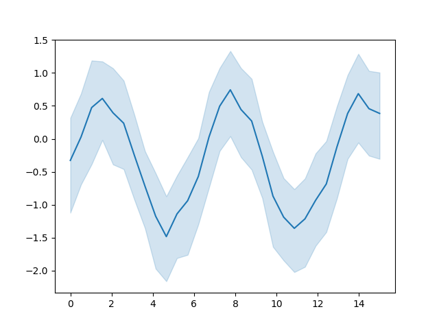

Note
Go to the end to download the full example code. or to run this example in your browser via JupyterLite or Binder
Seaborn example#
This example demonstrates a Seaborn plot. Figures produced Matplotlib and by any package that is based on Matplotlib (e.g., Seaborn), will be captured by default. See Image scrapers for details.
# Author: Michael Waskom & Lucy Liu
# License: BSD 3 clause
import matplotlib.pyplot as plt
import numpy as np
import seaborn as sns
# Enforce the use of default set style
# Create a noisy periodic dataset
y_array = np.array([])
x_array = np.array([])
rs = np.random.RandomState(8)
for _ in range(15):
x = np.linspace(0, 30 / 2, 30)
y = np.sin(x) + rs.normal(0, 1.5) + rs.normal(0, 0.3, 30)
y_array = np.append(y_array, y)
x_array = np.append(x_array, x)
# Plot the average over replicates with confidence interval
sns.lineplot(y=y_array, x=x_array)
# to avoid text output
plt.show()
Total running time of the script: (0 minutes 2.026 seconds)
Estimated memory usage: 73 MB